Dan Junbi: 10 mei 2014
- 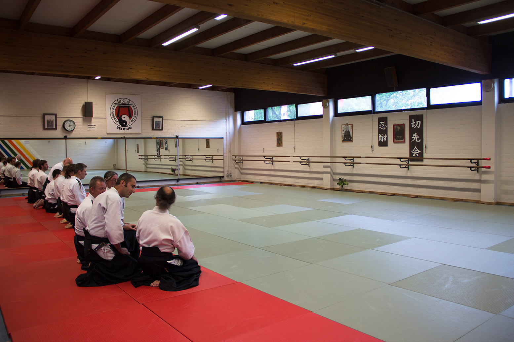
- 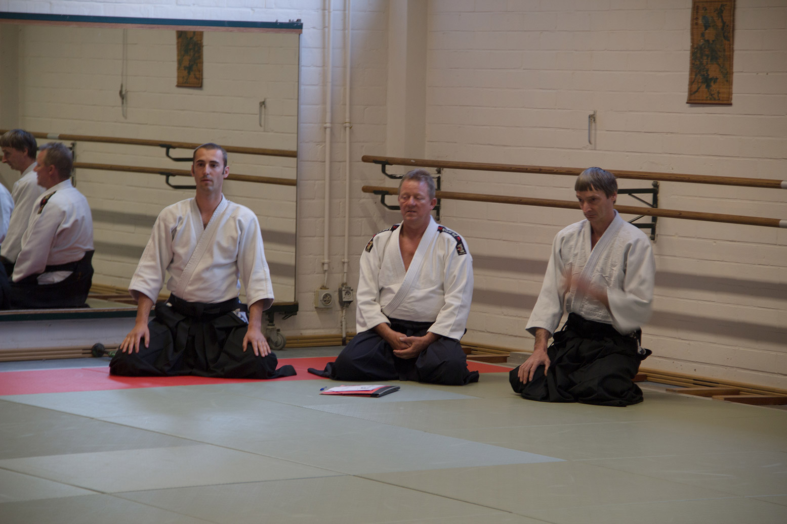
- 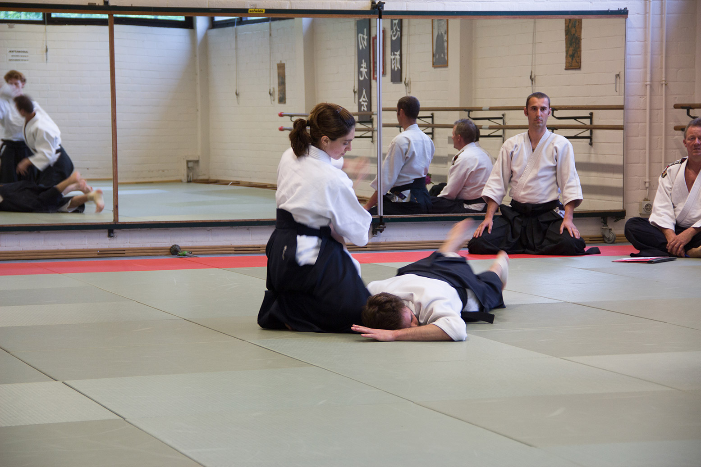
- 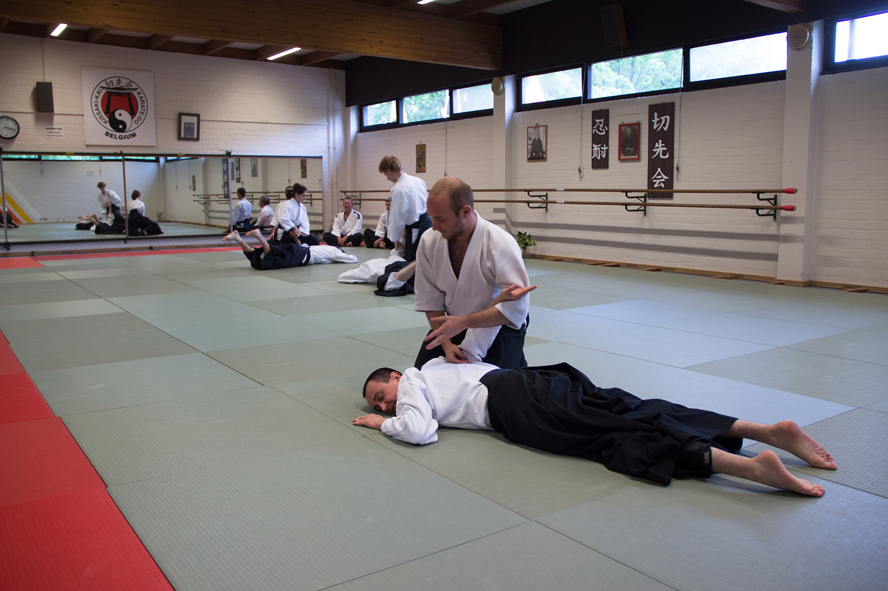
- 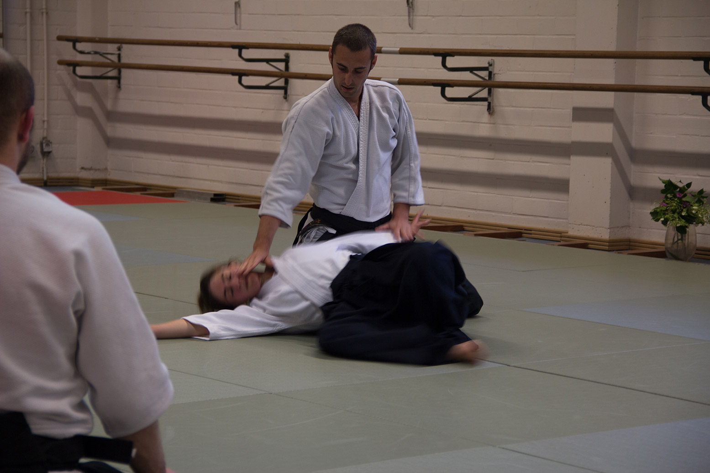
- 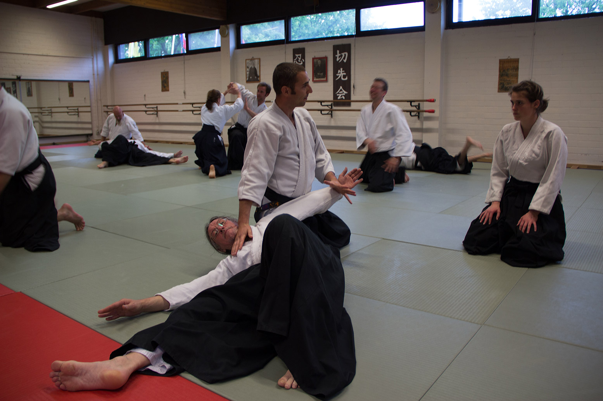
- 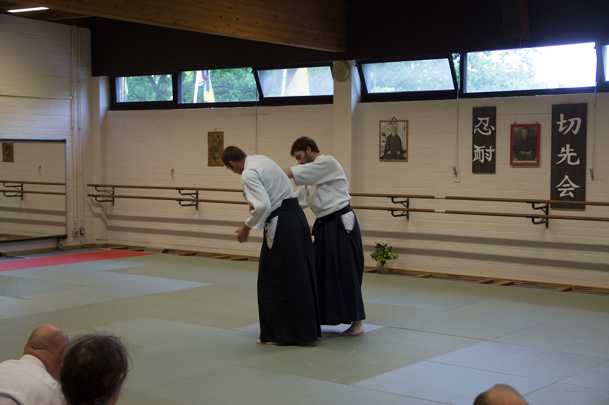

- 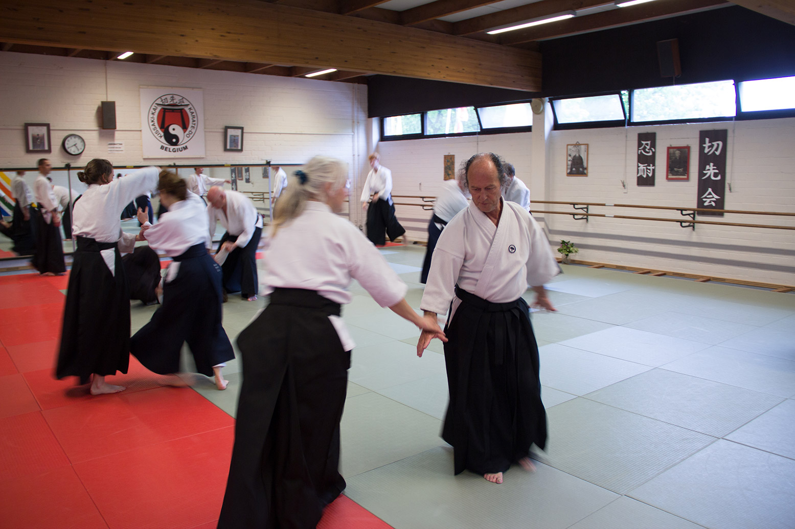
- 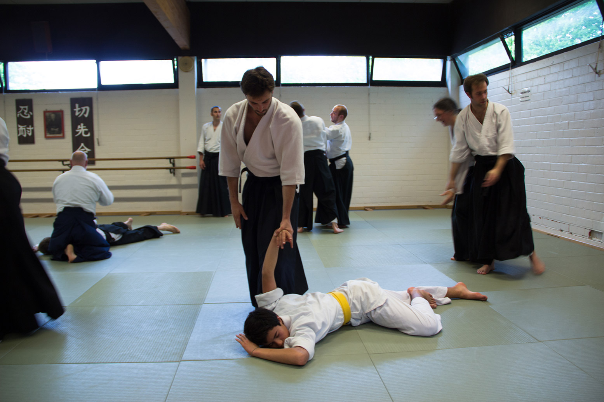
- 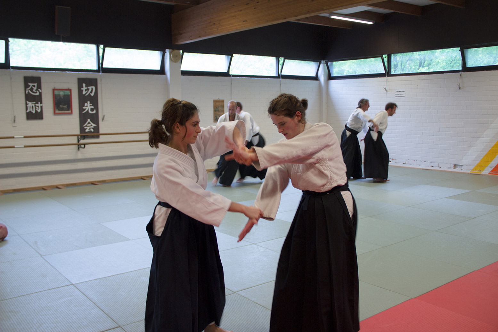
- 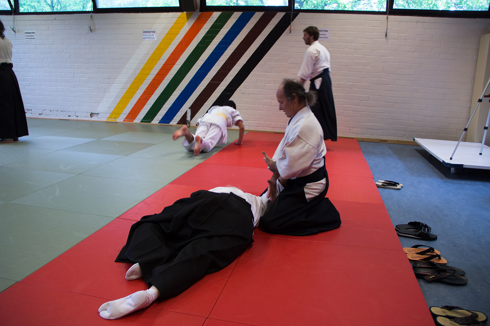
Aikido, Iaido, Meditatie
Bij Shõchikubai Dojo in Vosselare en Sint-Martens-Latem kun je terecht voor een kennismaking met meditatie, iaido of aikido: drie disciplines die je evenwichtiger maken en je meer zelfvertrouwen geven, om in deze tijden geluk te bekomen voor jezelf, voor alles en iedereen om je heen.
Meditatie is de weg van Bouddha. Zittend in stilte op een kussen, alleen of in groep; met je geest gericht op één punt kom je tot jezelf, met als doel :
"het stoppen van het lijden van alle voelende wezens".
Iaido staat voor de weg van het Zwaard. Je zoekt dan naar eenheid van geest, lichaam en zwaard, in vloeiende bewegingen als flitsend staal.
Aikido is de weg van kracht van Harmonie. Je verenigt dan je eigen kracht met die van de partner en alle krachten van de kosmos, met als doel conflicten om te zetten in harmonie.
Meditatie is de weg van kracht van Harmonie. Je verenigt dan je eigen kracht met die van de partner en alle krachten van de kosmos, met als doel conflicten om te zetten in harmonie.
Waar en wanneer kan ik trainen
Shõchikubai Dojo geeft je de mogelijkheid om tweemaal per week te trainen. Deze lessen hebben plaats:
Als je zin hebt om bij ons langs te komen, graag eens een seintje op voorhand te geven.
Dinsdag: 19u00 - 20u30
Hoge Heirweg 64
9830 St-Martens-Latem
Zaterdag: 19u00 - 21u00
Hoge Heirweg 64
9830 St-Martens-Latem
Contacteer ons
Je kan altijd langskomen in een van onze dojo's om een proefles te volgen maar het is altijd best ons een seintje te geven.
Marc Eliaert
Lagestraat 21, 9850 Nevele (Vosselare)
0486 780 869
marceliaert@yahoo.com